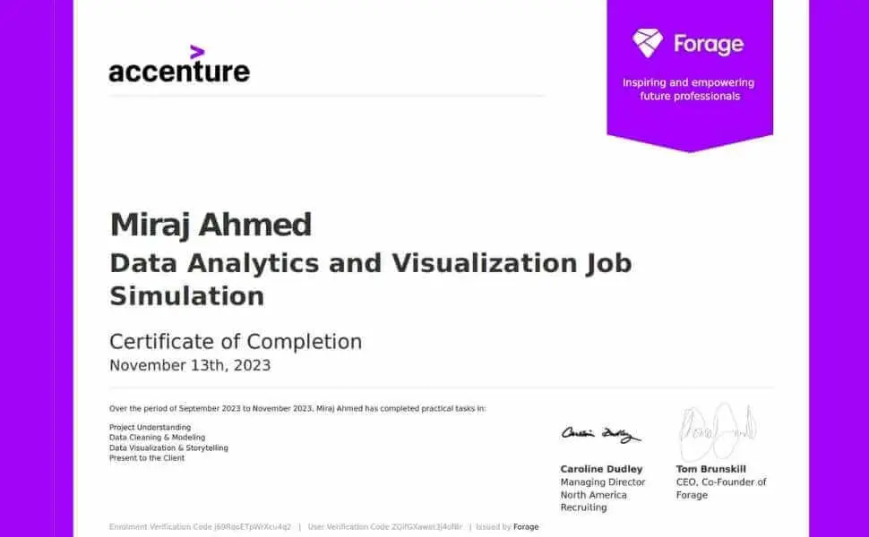
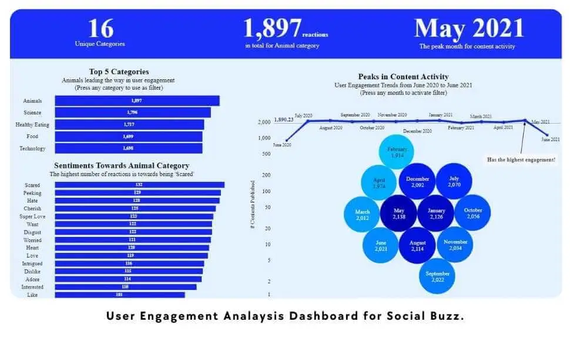

User Engagement Analysis
Project Information
- Category: Data Analytics / Visualization
- Client: Accenture (Forage Simulation)
- Tools: Python, Tableau, Excel
- Focus: Content Trends & User Behavior
- Live Demo: View Dashboard
Project Overview
This project is part of the Data Analytics Job Simulation by Accenture North America on Forage. I was tasked with advising a hypothetical social media client, "Social Buzz," requiring a deep dive into the role of a Data Analyst and applying analytical skills to real-world decision-making.

Situation
The main objective was to clean, model, and analyze seven datasets to extract insights into content trends. Specific business questions addressed included:
- How many unique content categories exist?
- What are the top 5 categories by popularity?
- Which month experiences the peak in user engagement?

Tableau Dashboard Visualization
Action
To achieve these objectives, I employed a structured approach involving:
- Data Cleaning and Modeling: Processed raw datasets to ensure accuracy, relevance, and structured the data for efficient analysis.
- In-Depth Analysis: Explored datasets to identify unique categories, calculated total reactions, and analyzed temporal patterns.
- Dashboard Creation: Developed an interactive Tableau dashboard to visualize insights and answer the client’s specific questions comprehensively.
Result
The analysis provided clear, actionable insights highlighting significant user engagement trends:
🏆 Top 5 Categories
- 1. Animals: 1,897 reactions
- 2. Science: 1,796 reactions
- 3. Healthy Eating: 1,717 reactions
- 4. Food: 1,699 reactions
- 5. Technology: 1,698 reactions
📅 Peak Engagement
May 2021
Highest user activity recorded
Sentiment Breakdown (Top Category: Animals)
The top category generated 1,897 total reactions, with a diverse sentiment spread ranging from "Scared" (132) to "Peeking" (129) and "Cherish" (125).
Conclusion
The comprehensive dashboard not only addressed the client’s specific inquiries but also unveiled critical insights into user engagement and content trends. These insights inform strategic decisions, helping the client optimize content strategy and enhance user engagement. This project underscored the importance of meticulous data analysis and visualization in driving data-driven decision-making.